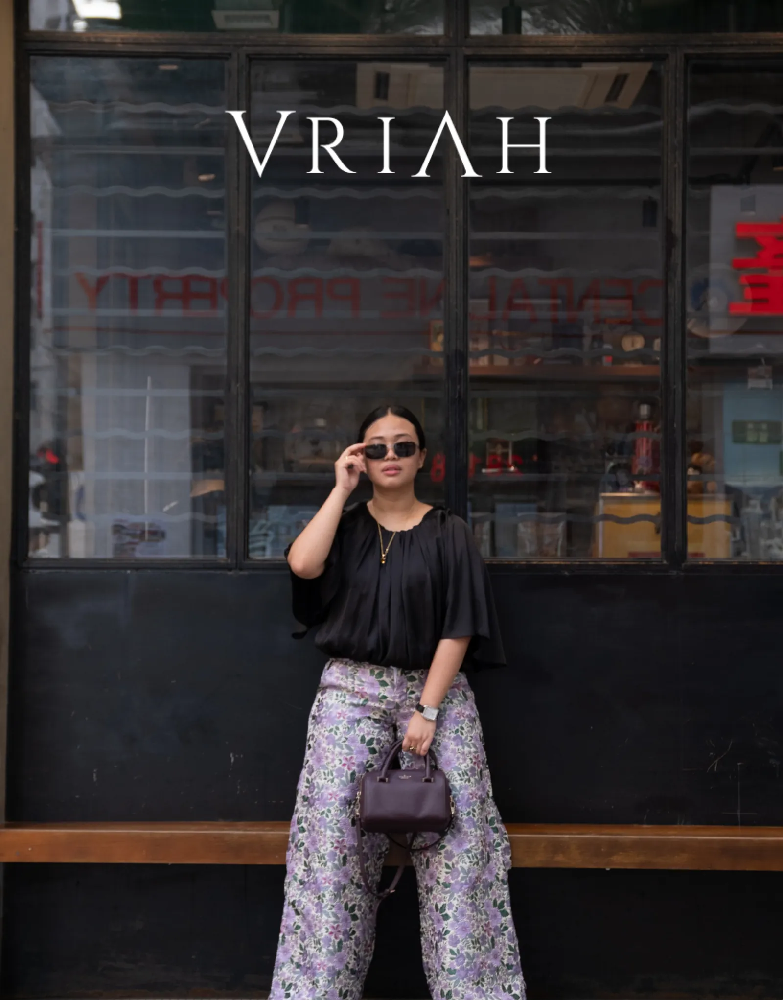
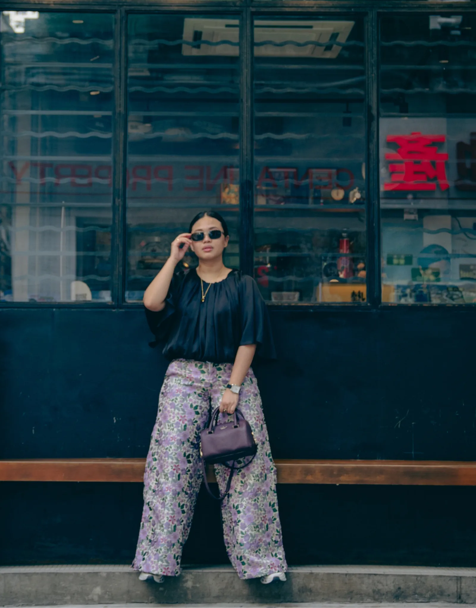
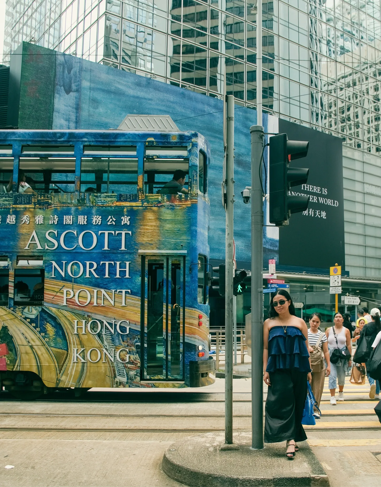
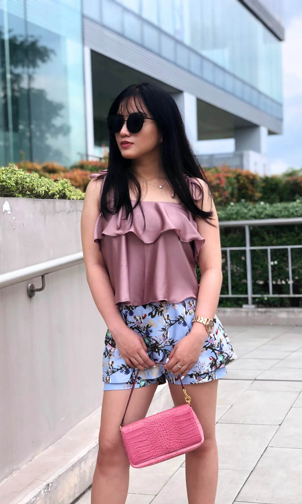
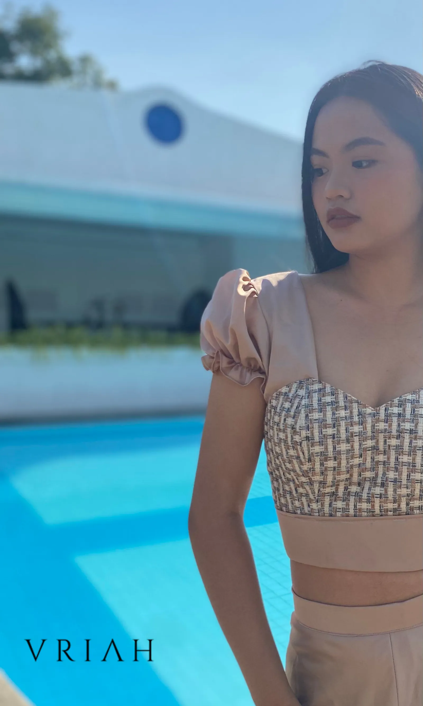
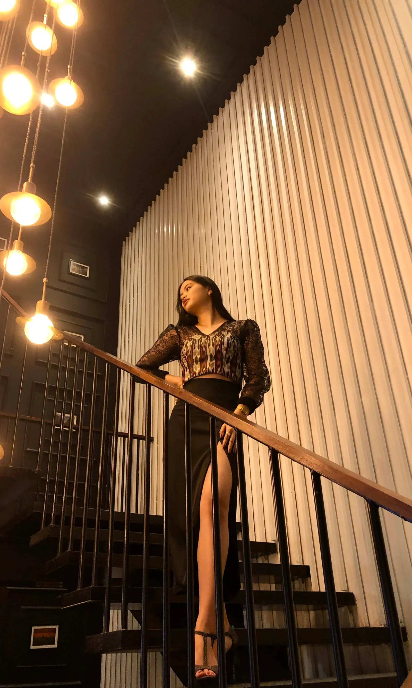
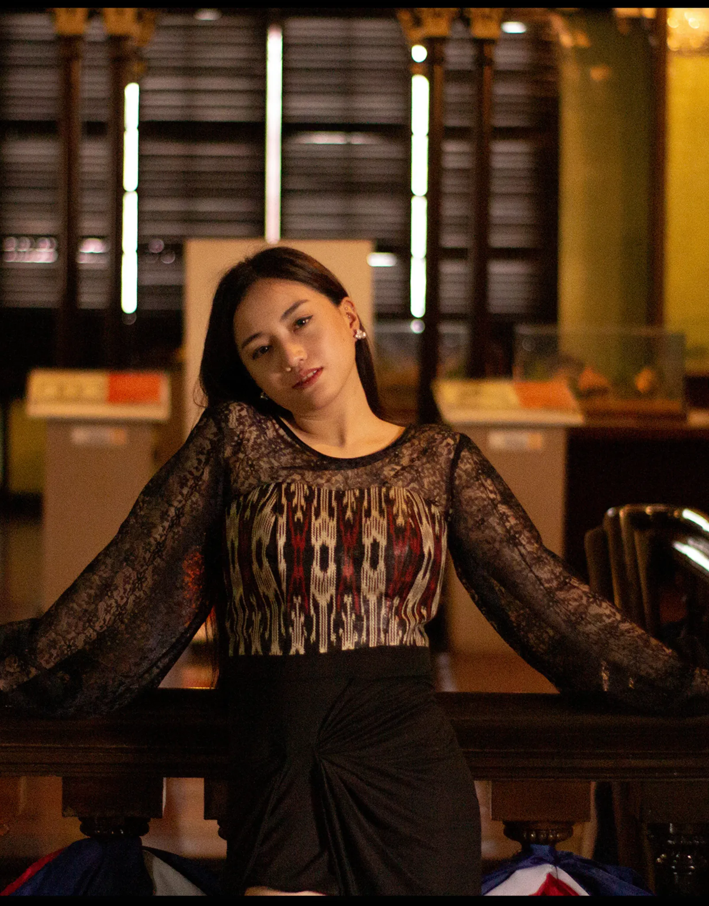

A Day, Considered
The
Looks.
Every frame, arranged by look. Select a look to see its pieces, or a photograph to see it in full.
Look 01
Blush Camisole, Floral Trousers
- Blush crinkle camisole
- Floral wide-leg trousers
Look 02
Black Blouse, Lilac Print Trousers
- Black draped blouse
- Lilac floral wide-leg trousers
Look 06
Champagne Puff-Sleeve Set
- Puff-sleeve top with woven bodice
- Satin wide-leg trousers



















The URIAH visual journal29 photographs / 07 looks